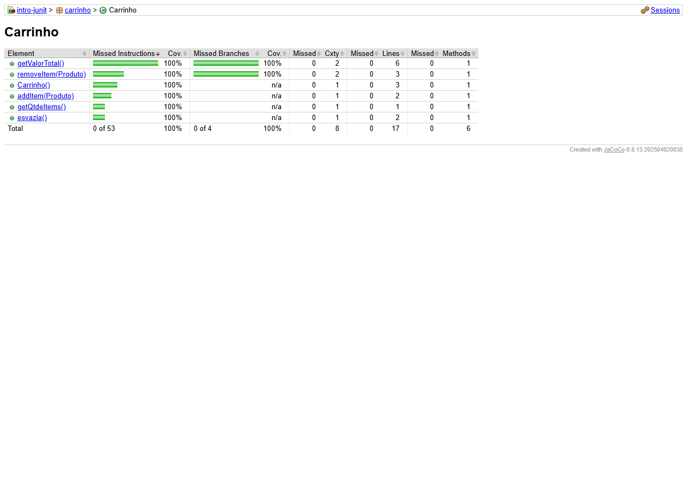
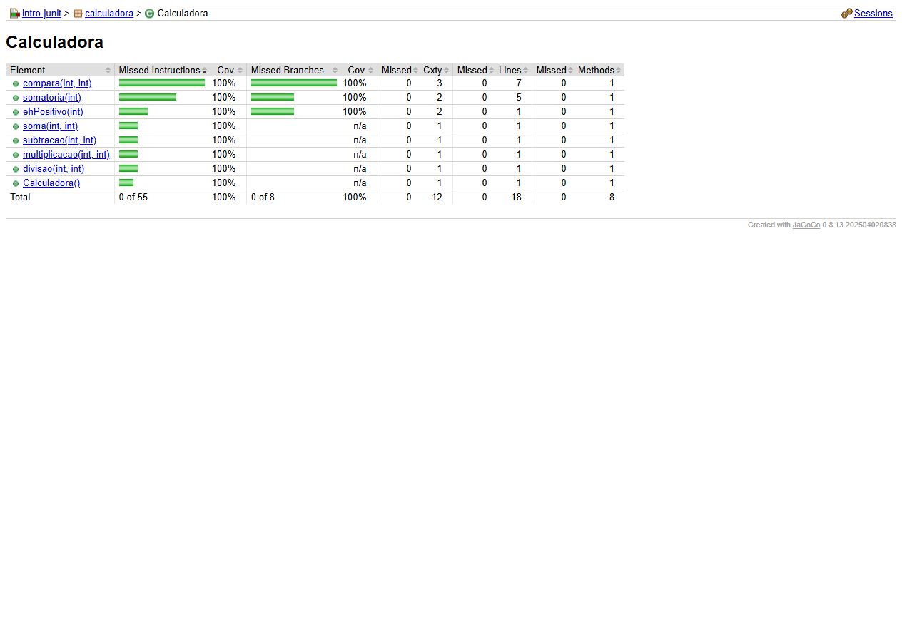
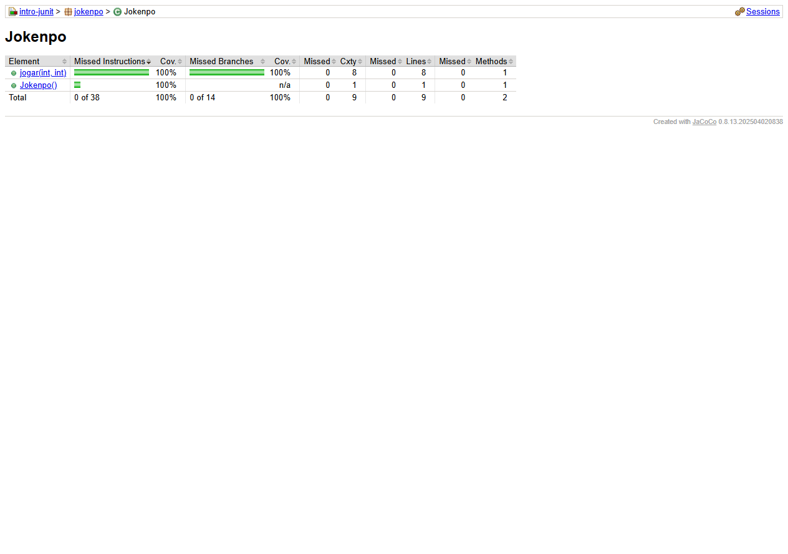

Cobertura de testes e escore de mutação
1. Cobertura estrutural (JaCoCo)
Para a leitura dos critérios, usamos cobertura de linhas executáveis como indicador de todos-nós e cobertura de desvios/branches como indicador operacional de todas-arestas decisórias. Complexidade ciclomática é o valor do contador Cxty do JaCoCo. Os três objetos têm todos os desvios instrumentados cobertos.
| Classe | Todos-nós (linhas) | Todas-arestas decisórias (branches JaCoCo) | Complexidade ciclomática (JaCoCo) |
|---|---|---|---|
| Carrinho | 17/17 · 100% | 4/4 · 100% | 8 |
| Calculadora | 18/18 · 100% | 8/8 · 100% | 12 |
| Jokenpo | 9/9 · 100% | 14/14 · 100% | 9 |
Evidências de cobertura por classe
As capturas abaixo exibem as páginas originais de análise do JaCoCo, embutidas neste documento. No relatório do JaCoCo, “Missed Branches” igual a 0 confirma a cobertura de todos os desvios contabilizados.
Classe Carrinho — JaCoCo
Linhas: 17/17 (100%) · Branches: 4/4 (100%) · Cxty: 8

Classe Calculadora — JaCoCo
Linhas: 18/18 (100%) · Branches: 8/8 (100%) · Cxty: 12

Classe Jokenpo — JaCoCo
Linhas: 9/9 (100%) · Branches: 14/14 (100%) · Cxty: 9

2. Escore de mutação (PIT)
O escore de mutação é a razão entre mutantes mortos (killed) e mutantes válidos gerados, excluindo mutantes não viáveis. Mutantes sobreviventes indicam alterações que a suíte não distinguiu do programa original.
| Classe | Mortos | Sobreviventes | Mutantes válidos | Escore |
|---|---|---|---|---|
| Carrinho | 6 | 0 | 6 | 6/6 · 100% |
| Calculadora | 17 | 2 | 19 | 17/19 · 89,47% (89% no PIT) |
| Jokenpo | 14 | 0 | 14 | 14/14 · 100% |
| Total | 37 | 2 | 39 | 37/39 · 94,87% (95% no PIT) |
Mutantes sobreviventes em Calculadora: (1) limite do laço de somatoria (alteração de fronteira em n >= 0); (2) limite da comparação em compara (alteração de fronteira em a > b). Os testes exercitam os caminhos, mas não falham para essas duas mutações. Casos de fronteira adicionais podem fortalecer a suíte.
3. Interpretação e limites da medição
- A cobertura de linhas é uma aproximação prática do critério todos-nós para os nós executáveis representados no fonte.
- O JaCoCo mede branches (resultados dos desvios condicionais/switch), não todas as arestas sequenciais de um grafo de fluxo de controle formal. Assim, “todas-arestas” neste relatório significa cobertura de todas as arestas decisórias contabilizadas pelo JaCoCo; a ferramenta não fornece diretamente uma contagem independente de todas as arestas do CFG.
- A complexidade ciclomática reportada é a soma de complexidade dos métodos da classe, conforme contador JaCoCo. Ela não é uma porcentagem de cobertura.
- Os escores descrevem a suíte existente no repositório clonado; não distinguem automaticamente quais exercícios foram originalmente escritos pela estudante ou pelo ChatGPT.
4. Relatórios gerados e reprodução
Para reproduzir na raiz do projeto: mvn clean verify gera a cobertura em target/site/jacoco/; em seguida, mvn org.pitest:pitest-maven:mutationCoverage gera o relatório de mutação em target/pit-reports/.